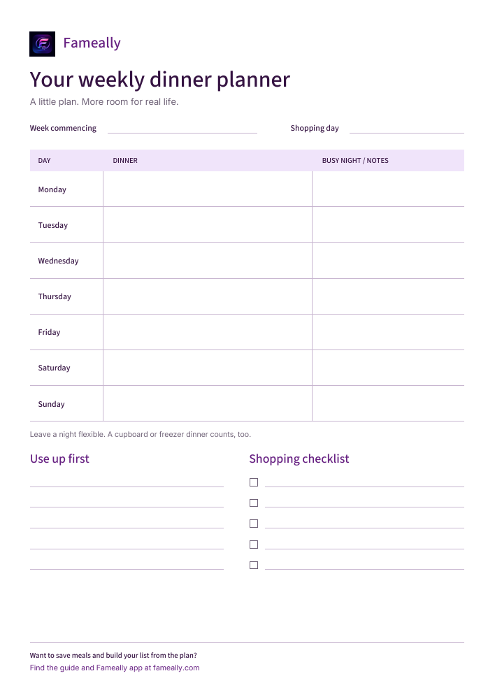

How to Plan Family Meals Around What You Already Have
Start with a short kitchen check, build three dinners and write a list of the missing ingredients.
Read the guidePractical ideas for planning dinner, sharing the shop, and making the most of what’s already in the cupboard.
Choose an app, put a week together, or get the household shop organised.
Browse every guide, with the most recently published first.
Looking for something to print? Visit our free printable weekly meal planner.
Start with a short kitchen check, build three dinners and write a list of the missing ingredients.
Read the guideExplore where AI meal ideas help, what to check and how reusable family plans can make the next week easier.
Read the guideGroup the items you need and arrange your list around a familiar supermarket route, with a practical before-and-after example.
Read the guideMake better use of the food you buy with realistic meals, safe storage, planned leftovers and a short weekly check.
Read the guideCompare four AnyList alternatives by the household routine you want, from reusable meal plans to a simpler shared shopping list.
Read the guideCompare seven apps for families, couples and housemates, from free shared checklists to meals and household shopping together.
Read the guideUnderstand the move to Meals Hub and compare Fameally for familiar meals, reusable weeks and shared household shopping.
Read the guideChoose notes for a quick shop or a connected meal planner for the weekly routine, and see how Fameally gets more useful as you use it.
Read the guide
Choose paper, an app, or both for your household, with a free printable weekly dinner planner to get started.
Read the guide →Share dinner decisions and one shopping list with a flexible one-week routine for busy UK households.
Read the guideCompare Fameally, Good Food, Mealime, Paprika, Plan to Eat, AnyList, Samsung Food, and Cozi by the family planning job they do best.
Read the guideChoose a family meal planning app that helps with reusable meals, weekly planning, shared shopping lists, and real-life household routines.
Read the guidePlan cheaper family dinners before the weekly shop by reusing ingredients, reducing waste, and keeping an easy backup meal ready.
Read the guideUse a realistic weekly template that balances effort, cost, leftovers, flexible nights, familiar meals, and the family food shop.
Read the guideKeep regular household items like washing tablets, toothpaste, kitchen roll, bin bags, cereal, and bread from falling through the gaps.
Read the guideGive the week a familiar shape, leave room for preferences, and turn family meals into a food shop without starting from a blank page every time.
Read the guideTurn planned meals into ingredients, combine duplicate items, check what you already have, then add the household extras that never belong to one recipe.
Read the guideA useful plan is flexible enough to handle late finishes, clubs, traffic, tired evenings, changing plans, and simple fallback options for the nights that do not behave.
Read the guideBuild meals, generate the food shop, and keep household lists together in the mobile app.